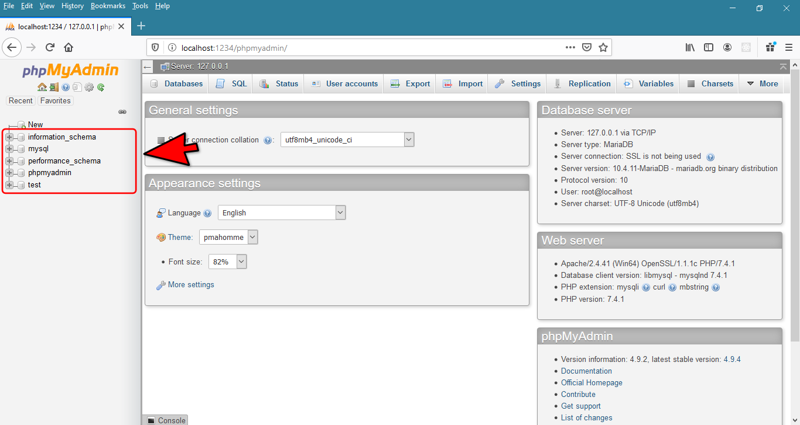
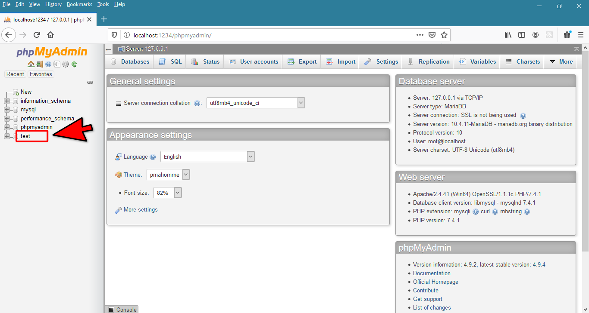
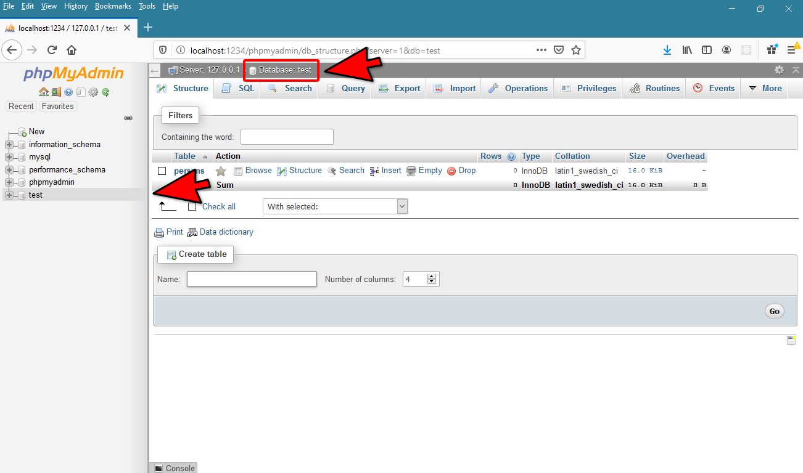
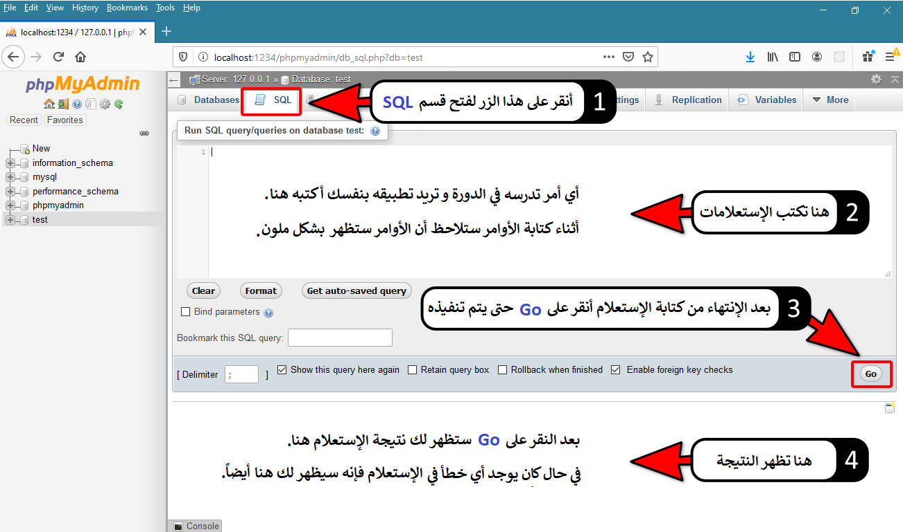
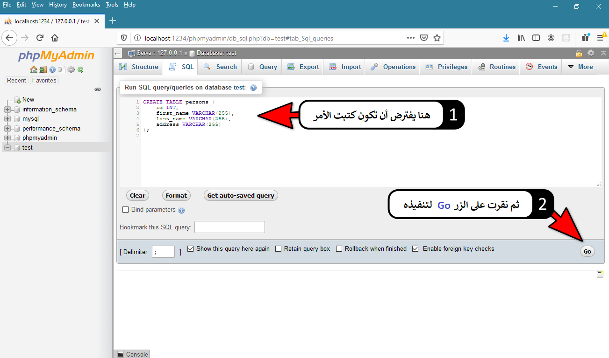
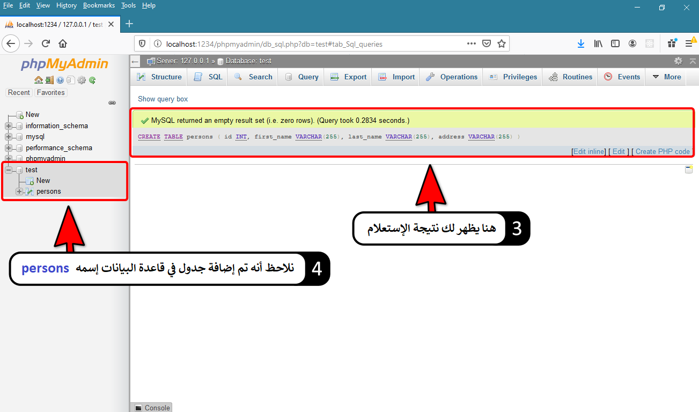
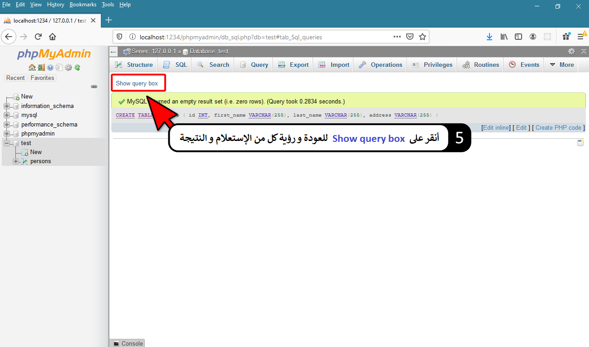
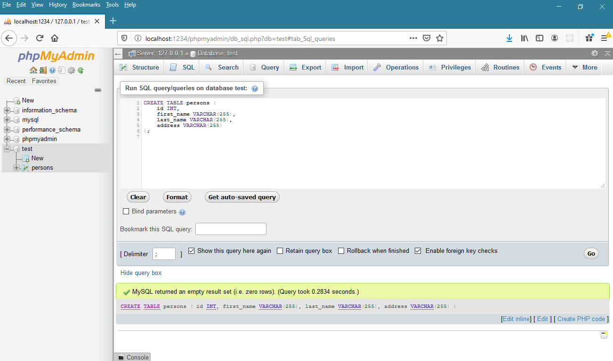
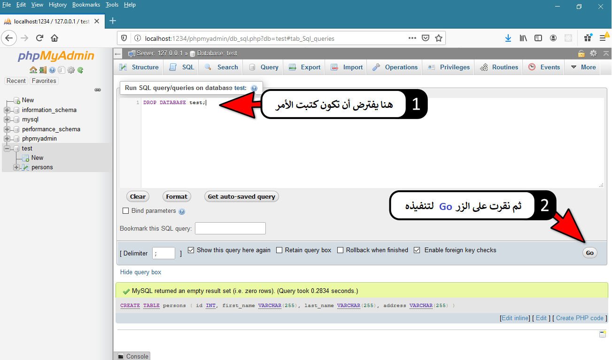
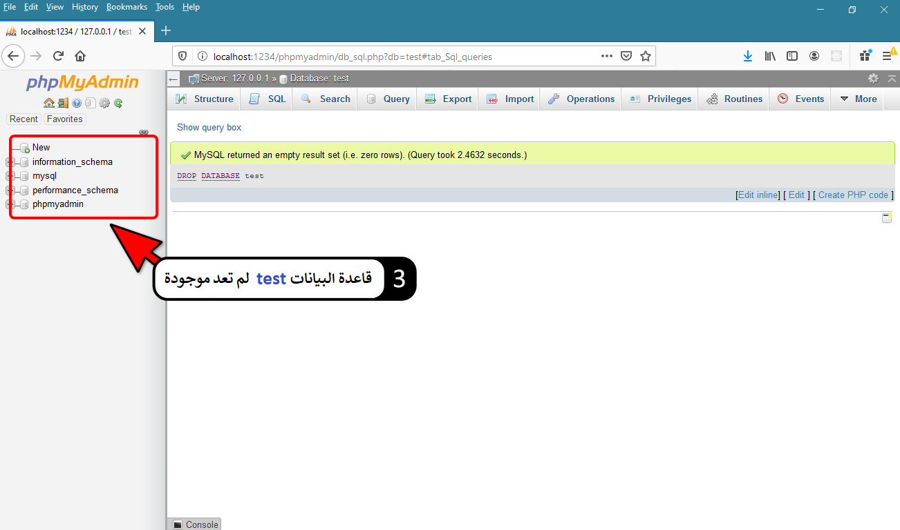

SQLكتابة أول إستعلام
طريقة تحديد قاعدة البيانات التي ستتعامل معها في phpMyAdmin
في البداية, جميع قواعد البيانات الموجودة في MySQL يظهرها لك phpMyAdmin في القائمة اليسرى كالتالي.

ملاحظة
قواعد البيانات التي تظهر في القائمة إنشاؤها بشكل تلقائي أثناء تنصيب MySQL ضمن XAMPP و يجب إبقائها كما هي.
قاعدة البيانات test هي الوحيدة من بينهم التي يمكنك إلغاؤها أو التعديل عليها لأنها فارغة و قاموا بتجهيزها من أجلك أنت.
الآن, أول شيء يجب أن تفعله قبل كتابة أي إستعلام, هو تحديد قاعدة البيانات التي سيتنفذ الإستعلام فيها.
لتحديد قاعدة البيانات التي تريد التعامل معها قم بالنقر على إسمها فقط.
الآن, قم بالنقر على إسم قاعدة البيانات test, أنقر على إسمها و ليس على الأيقونة الموضوعة بجانب الإسم.

لاحظ أنه يظهر لك الآن, أنك متصل بقاعدة البيانات test و يظهر ذلك في مكانين:

المكان الذي نكتب فيه أوامر SQL في phpMyAdmin
بعد تحديد قاعدة البيانات التي تنوي التعامل معها يمكنك البدء بكتابة أوامر SQL من خلال التوجه للقسم الخاص بكتابة أوامر SQL كالتالي.

كتابة أول إستعلام في phpMyAdmin
قبل فعل أي شيء, تأكد أنك على إتصال بقاعدة البيانات test لأننا سنضيف جدول فيها.
الآن, أدخل للقسم الخاص بكتابة أوامر SQL و أكتب الأمر التالي (أو إنسخه كما هو) ثم أنقر على الزر Go حتى يتنفذ.
ملاحظة: بشكل عام, الأمر التالي يقوم بإنشاء جدول إسمه persons و لكن لا تهتم إطلاقاً بطريقة عمل الكود و سبب كتابته بهذا الشكل بل ضعه فقط كما هو لأنك ستتعلم ذلك بتفصيل ممل في دروس لاحقة.
مثال
CREATE TABLE persons (
id INT,
first_name VARCHAR(255),
last_name VARCHAR(255),
address VARCHAR(255)
);
بعد تنفيذ هذا الأمر سيظهر لك نتيجة الإستعلام و سيظهر في قاعدة البيانات أنه تم إضافة جدول جديد في قاعدة البيانات test إسمه perosns.
الآن سنعرض جميع الخطوات التي يفترض أن تكون قد لاحظتها مع وضع بعض الملاحظات.
الصورة التالية تظهر كيف يبدو الإستعلام حين قمت بكتابته و من ثم تنفيذه.

الصورة التالية تظهر كيف تبدو نتيجة الإستعلام و قاعدة البيانات و كيف يمكنك العودة لرؤية الإستعلام الذي كتبته.

الصورة التالية تظهر كيف يمكنك العودة لرؤية الإستعلام الذي كتبته و نتيجته أسفل منه.

بعد النقر على الزر Show query box سيظهر الإستعلام الذي كتبته سابقاً و نتيجته كالتالي.

كتابة ثاني إستعلام في phpMyAdmin
قبل فعل أي شيء, تأكد أنك على إتصال بقاعدة البيانات test لأننا سنضيف جدول فيها.
الآن, أدخل للقسم الخاص بكتابة أوامر SQL و أكتب الأمر التالي (أو إنسخه كما هو) ثم أنقر على الزر Go حتى يتنفذ.
بشكل عام, الأمر التالي يقوم بمسح قاعدة البيانات test لأننا سنعلمك كيف تنشئ واحدة جديدة في الدرس التالي.
أيضاً لا تهتم بطريقة عمل الكود و سبب كتابته بل ركز فقط بمحاولة تنفيذه.
بعد تنفيذ هذا الأمر سيظهر لك نتيجة الإستعلام و سيظهر لك أن قاعدة البيانات test لم تعد موجودة في قائمة قواعد البيانات.
الآن سنعرض جميع الخطوات التي يفترض أن تكون قد لاحظتها مع وضع بعض الملاحظات.
الصورة التالية تظهر كيف يبدو الإستعلام حين قمت بكتابته و من ثم تنفيذه.

الصورة التالية تظهر كيف تبدو نتيجة الإستعلام و قائمة قواعد البيانات بعد أن تم مسح قاعدة البيانات test منها.



 محرر الويب
محرر الويب نظام الألوان
نظام الألوان محول الوحدات
محول الوحدات محلل عناوين الشبكات
محلل عناوين الشبكات